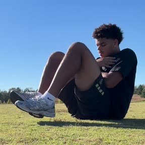

9:415G ▮▮▮
Today · Session 2 of 40/5 done
Start herePlyo warm-up: Bulgarian split jumps
3 x 8 each leg
Weak foot tap, pull, push
3 x 1 min, rest 30 sec
Weak foot outside pull, inside pull
3 x 1 min, rest 30 sec
3 cone turning drill
3 x 90 sec, rest 30 sec
FinisherStrength: V-ups
3 x 10, rest 30 sec